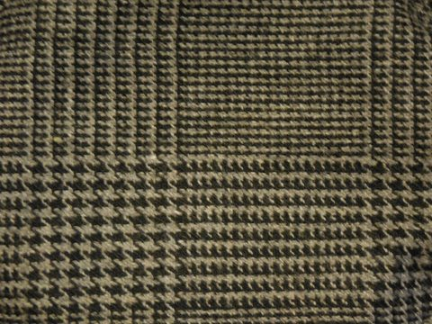
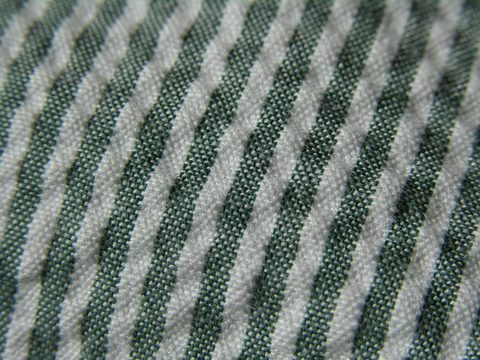
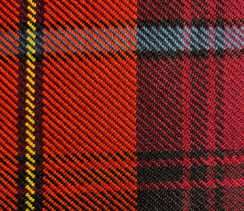

规格说清楚
纱支、密度、幅宽、克重与用途，尽量在开工前对齐，减少后期误解与返工。
About
南通开发区恒隆纺织有限公司是一家色织布工厂。我们围绕纱线染色后的织造工艺展开生产与协作，服务需要稳定色织面料的服装与家纺客户。

Craft
色织要求在上机之前完成配色与组织安排。经线与纬线带着既定色泽相遇，在织口处形成条、格与层次——颜色先于结构存在。
我们不把重点放在口号上，而放在可沟通的规格、可确认的样布，以及可跟进的交付节奏。客户带来用途与风格意向，我们回应以清晰的工艺路径。
Place
南通是中国重要的纺织产业聚集地之一，配套相对完整，便于色织相关的纱线、织造与交付环节在区域内衔接。
若需寄样或实地沟通，欢迎先通过联系页预约时间并确认收件信息。
前往联系页
Principles

纱支、密度、幅宽、克重与用途，尽量在开工前对齐，减少后期误解与返工。

以色卡、来样或确认样为基准推进配色，让「接近」变成双方可见的共识。

试织、确认、批量各阶段保持沟通节点，让进度对双方都可见。